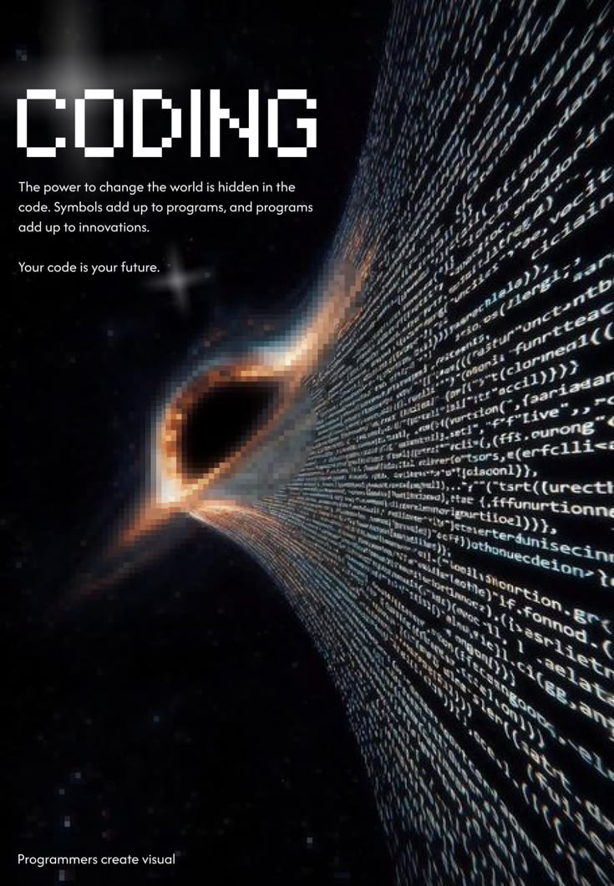

0810551446

Welcome to my website! This is a simple website built using only HTML and CSS in VS Code. Here, you can learn more about me, my hobbies, skills, aspirations, and how to contact me. Feel free to explore the different sections and get to know me better!
About Me
Hi, my name is Hiram Kiama. I am a passionate software developer with a strong interest in web development and programming. I enjoy creating innovative solutions and learning new technologies to enhance my skills. In my free time, I like to explore different programming languages and work on personal projects that challenge me to think critically and creatively.
My Hobbies
Reading
Swimming
drawing
My Skills
java script
css
HTML
MY ASPIRATIONS
By the end of this course, I aim to approach tech with a problem-solving mindset, continuously learning and adapting to new technologies. I aspire to contribute to impactful projects that make a difference in people's lives and to collaborate with like-minded individuals who share my passion for innovation and creativity.Outside of web development,im an avid gamer and tech enthusiast, always seeking to explore the latest trends and advancements in the tech world. I believe that by staying curious and open-minded, I can continue to grow both personally and professionally, ultimately achieving my goal of becoming a well-rounded and skilled software developer.
Contact Information
Email: caligraph66@gmail.com
Phone: 0180551446
contact me